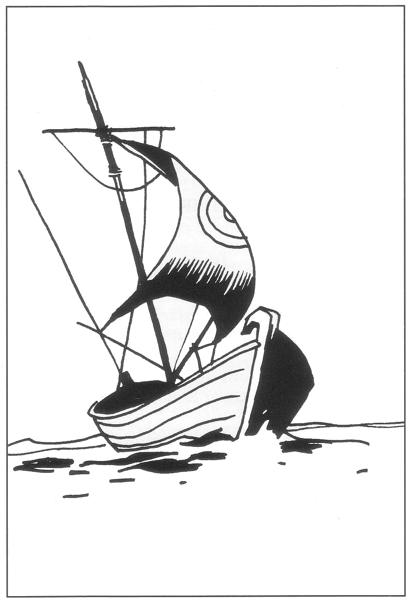

05. Mot Clusta Noba!
Överblick och inledning
Resan till Clusta Noba kan bli en transportsträcka om inget inträffar. Emellertid försöker minst sex olika grupper ta sig till Clusta Noba för att dominera den femte konfluxen. Spelets fortsättning beror till stor del på i vilken ordning de olika grupperna kommer dit, hur starka de är, deras inbördes relationer och hur de agerar på Clusta Noba. SL kan följa reglerna nedan eller bestämma efter behag.
Stöter man på flottstyrkorna i Isakra blir Melealina mycket angelägen att komma iväg för att hinna först. Hon undrar om man inte på något sätt kan sinka konkurrenterna...
Tipz: Låt sällskapet anlända tre dagar före den snabbaste flottstyrkan. Slumpa de andras ankomst men låt inte Stegoserna komma först. Då hinner äventyrarna utveckla trevande relationer till bybor och munkskolor, tala med Norman Bävergäll och grovt pejla in konfluxen. Samtidigt sätter de igång klockan för crurernas ankomst och tidigarelägger konfluxen, vilket sätter mer tidspress på arméernas befälhavare och motverkar försiktiga ställningskrig. Den första armén bör å andra sidan dyka upp innan sällskapet helt hunnit lösa några problem. På detta sätt blir utmaningen maximal för alla inblandade och utgången oviss in i det sista.
Någon gång under färden bör Melealina visa en rollperson det stora ekollon hon tagit med sig från blomstereken. Hon hoppas kunna plantera ollonet vid den femte konfluxen när allt lugnat sig.
Resande mot Clusta Noba
De sex grupperna är:
- Äventyrarna och deras sammansvurna med skeppet Bladverk
- Trakoriernas flottstyrka under Lugal Praanz da Kaelve
- Ransardernas flottstyrka under Amiral Trugdan Järnbuk
- Stegosernas flottstyrka under Amiral Naramsi av den östra klyftan
- Stegosernas kung Arn Dunkelbrink
- Kung Ottars odöda arméer
Grupperna lämnar Isakra vid olika tidpunkter enligt förra kapitlet.
Om en konvoj seglar ifatt en annan, dvs. lämnar Isakra senare men enligt beräkningarna kommer fram till Clusta Noba före den andra konvojen, finns det 50% chans att de två grupperna siktar varandra till havs. Om båda konvojerna undviker den andra kommer man inte närmare. Om båda söker kontakt träffas man. Om bara den snabbare konvojen söker kontakt har de 60% chans att lyckas. Om bara den långsammare konvojen söker kontakt har de 40% chans att lyckas.
Faror på vägen
I Svavelvinter beskrivs farorna för sjöfart till eller från Marjura. Riskerna är i detta äventyr något mindre eftersom man färdas med krigsfartyg, men ändå inte obetydliga. Äventyrarnas resa bör naturligtvis spelas detaljerat. För de andra grupperna kan SL räkna ut hur många skepp och soldater som verkligen kommer fram till Clusta Noba och när de anländer, alternativt sänka skepp som det passar honom. Årstiden beror på tidigare spel. Konfluxen väntar inte på bättre väder. De som vill till Clusta Noba måste åka omedelbart.
Trakorierna får alltid dra ifrån 3% från varje risk att stöta på faror eftersom de känner rutten sedan svavelhandelns tid. Har de letat fram portolanen från Svavelrutten i Isakra får de dra av ytterligare 3%. Andra resenärer får dra av 4% från varje risk att stöta på faror om de letat fram Portolanen i Isakra.

Faror under vår och höst
Pirater
Svavelkonvojerna reste på sin tid uteslutande under vår- och höstmånaderna. Följer man deras exempel slipper man visserligen naturkatastrofer, men riskerar istället att möta pirater. Dessa har emellertid minskat i antal sedan handeln på Marjura upphörde.
Risken att möta pirater är 10% per vecka. Piraterna har (slå 1T20):
1-10 ett skepp
11-16 två skepp
17-19 tre skepp
20 fyra skepp
Om Bladverk möter pirater närmar sig dessa under handelsflagg och spelar nödställda med brandrök eller sjukflagg. Alvskeppet kan lätt undvika kontakt genom att kalla upp dimma eller gå ner under ytan, men om piratskeppet kommer jämsides blir det strid. Du kan med fördel använda de detaljerade bordningsreglerna i Kopparhavets Kapare.
Piraterna kan ge sig på eftersläntrare ur de trakoriska, ransardiska eller Stegosiska krigsflottorna, men är inte starka nog att konfrontera huvudstyrkorna.
Om Arn Dunkelbrink blir upphunnen av pirater ensam i sin lilla båt, vandrar han stolt upp på piratskeppets däck, utmanar och besegrar kaptenen. Han tar över kommandot genom att erbjuda piraterna en gynnad ställning i hans flotta i stället för att ruttna i dessa övergivna vatten. Piratskeppet seglar vidare mot Clusta Noba under stegosisk flagg och adderas till flottan om man kommer fram.
Faror under vintern
Isberg
Det finns 15% chans per vecka att ett fartyg i någon grupp seglar på ett dolt isberg. (Risken är lägre än i Svavelvinter eftersom den redan modifierats för kaptenens sjökunnighet.)
Bladverk påverkas inte av en kollision eftersom det levande trädet reflexmässigt dämpar stöten med grenar och rötter.
Trakorierna, ransarderna och stegoserna seglar i konvoj med ett lättare fartyg i täten som spaning. Detta fartyg tar vid kollisionen 1T100+20% av sina skrovpoäng i skada.
SKADA 10-49% — konvojen sinkas en dag per vecka såvida man inte överger det skadade skeppet eller låter det komma efter i sin egen takt.
SKADA 50-100% — konvojen sinkas två dagar per vecka såvida man inte överger det skadade skeppet eller låter det komma efter i sin egen takt.
SKADA ≥100% — fartyget sjunker. Slå 1T6. 1-4 = besättningen räddas, 5 = 1T100% av besättningen följer fartyget i djupet. 6 = Fartyget går under med man och allt.
Sjöormar
Det finns 25% chans per vecka att en grupp råkar ut för ett stim sjöormar.
Valen Grono håller sjöormar borta från Bladverk om han finns med. Annars är risken 50% per möte att en enstaka orm försöker överraska och snappa bort vakten på däck +50% att 1T4 ormar anfaller öppet.
Trakorier, ransarder och stegoser blir av med 10 soldater per möte. Vid varje möte finns dessutom 15% risk att en jättelik orm drar ner en hel kavarell i djupet med man och allt. Förstärkta kavareller eller galbaloner kan inte dras ner.
Arn Dunkelbrink råkar tursamt nog inte ut för sjöormar. Faror under sommaren
Cykloner
Bladverk råkar inte ut för cykloner eftersom gråalverna kan förutsäga väder och undvika de värsta stormarna.
Trakorier, ransarder och stegoser löper 20% risk per vecka att råka ut för cykloner. Drabbas konvojen av en cyklon slår SL 1T10 för varje kavarell eller förstärkt kavarell:
1-7 fartyget rider ut stormen
8 kavareller förlorar 1T100-50% av sina skrovpoäng
9-10 kavereller och förstärkta kavareller förlorar
1T100+20% av sina skrovpoäng
Ett fartyg som förlorar ≥100% skrovpoäng går under med man och allt. Övriga skador — se isberg. För varje fartyg ska SL dessutom slå ytterligare 1T10:
1-7 inget händer
8 fartyget kommer ifrån konvojen och måste återvända
till Isakra för resten av spelet
9-10 fartyget kommer ifrån konvojen och kommer ensam till
Clusta Noba tre dagar före till sex dagar efter
huvudstyrkan (slå 1T10-7).
Arn Dunkelbrink råkar tursamt nog inte ut för cykloner.
Oceanvirvlar
Det finns 15% chans per vecka att det främsta skeppet i en konvoj dras in i en vandrande oceanvirvel och går under med man och allt. Om konvojen drabbats av cyklon finns det därutöver 20% chans att den inom ett dygn stöter på en virvel bildad av cyklonen.
Grono varnar Bladverk för oceanvirvlar om han är med. Annars klarar alvskeppet att dras ner i en virvel eftersom det kan segla i undervattensläge. Dras Bladverk ner måste dock varje person ombord klara ett normalt SMI-slag för att inte få 1T10 KP skada. Personer som skadas måste klara ytterligare ett normalt SMI-slag för att inte falla över bord och drunkna.
Arn Dunkelbrink råkar tursamt nog inte ut för oceanvirvlar.
När kommer de olika grupperna till Clusta Noba?
Bestäm vindförhållanden
Slå varje vecka 1T6 för att avgöra vilken vind som dominerar. Samma vind gäller alla resenärer.
1-3 Medvind
4 Ingen påverkan
5-6 Motvind
Äventyrarna
Äventyrarna kommer utan justeringar till Clusta Noba 1T6+27 dagar efter avfärden från Isakra: absolut maximum 42 dagar, absolut minimum 23 dagar.
Avdrag och tillägg
- Inga avdrag eller tillägg för vindar (Bladverk paddlar till stor del)
- Lägg till 1T6 dagar om Grono inte är med
- Dra ifrån 1T2 dagar per animist förutom besättning+Melealina
- Dra ifrån 1T4 dagar för portolanen över svavelrutten
- Lägg till två dagar per intermezzo med havsodjur eller oceanvirvlar
- Isberg påverkar inte Bladverks färd
Trakorierna
Trakorierna kommer till Clusta Noba 1T10+26 dagar efter avfärden från Isakra: absolut maximum 44 dagar, absolut minimum 21 dagar.
Avdrag och tillägg
- Lägg till två dagar per veckas motvind
- Dra ifrån två dagar per veckas medvind
- Dra ifrån 1T4 dagar för portolanen över svavelrutten
- Lägg till två dagar per möte med cyklonvindar
- Lägg till en dag per intermezzo med havsodjur eller oceanvirvlar
Ransarderna
Ransarderna kommer till Clusta Noba 2T6+25 dagar efter avfärden från Isakra: absolut maximum 45 dagar, absolut minimum 21 dagar.
Avdrag och tillägg
- Lägg till två dagar per veckas motvind
- Dra ifrån två dagar per veckas medvind
- Dra ifrån 1T4 dagar för portolanen över svavelrutten
- Dra ifrån 1T6 dagar om Shagulklon eller nekromantiker är ombord
- Lägg till två dagar per möte med cyklonvindar
- Lägg till en dag per intermezzo med havsodjur eller oceanvirvlar
Stegoserna
Stegoserna kommer till Clusta Noba 1T4+28 dagar efter avfärden från Isakra: absolut maximum 40 dagar, absolut minimum 24 dagar.
Avdrag och tillägg
- Lägg till två dagar per veckas motvind
- Dra ifrån två dagar per veckas medvind
- Lägg till två dagar per möte med cyklonvindar
- Lägg till en dag per intermezzo med havsodjur eller oceanvirvlar
Arn Dunkelbrink ensam
Om Arn Dunkelbrink följer med någon konvoj styr detta naturligtvis hans ankomst. Följande gäller om kungen tar en egen liten båt: Arn D. kommer till Clusta Noba 2T10+30 dagar efter avfärden från Isakra: absolut maximum 55 dagar, absolut minimum 26 dagar.
Avdrag och tillägg
- Lägg till tre dagar per veckas motvind
- Dra ifrån tre dagar per veckas medvind
- Arn D råkar inte ut för sjöormar eller andra katastrofer genom gudarnas försyn
Crurernas arméer
Crurernas stenbro blir klar exakt 7 dygn efter äventyrarnas ankomst till Clusta Noba. Sedan jorddragaren börjat röra sig och vattnet stigit 20 meter måste bron byggas på ytterligare 14 dygn. Om Crurerna hinner över till holmen innan jorddragaren befrias utsträcks Landakennings lagoband dit, men bryts igen när vattnet stiger över bron. De vandöda som vandrat över till Clusta Noba när besvärjelsen bryts förvandlas omedelbart till vanliga odöda. (Se vidare Marjuri förflyttning.)
Hur grupperar sig styrkorna på Clusta Noba?
Goda ankringsplatser för större skepp har markerats med ”” på spelledarens förenklade hexagonkarta och strategiska landrutor med en eller två stjärnor (*). Dessa positioner är angivna i portolanen från svaveltraden. Man finner dem annars genom ett lyckat färdighetsslag i Sjökunnighet respektive Strategi. Trupper kan inte gå iland direkt från oceangående skepp, utan måste använda småbåtar eller simma. Den första truppstyrka som kommer till Clusta Noba ankrar sannolikt i viken utanför byn och besätter inledningsvis platserna markerade med två stjärnor. Nästa styrka ankrar antagligen vid sydspetsen och besätter platser med en stjärna såvida den inte är stark nog att köra bort styrka nummer ett. En tredje eller en mycket svag styrka får antagligen hålla sig en bit från ön. Crurerna kommer att försöka ta hela Clusta Noba från norr till söder sedan de forcerat Hypherernas mur.
Spelare som sköter ransarder eller trakorier får naturligtvis placera ut sina styrkor hur de vill. Crurerna har 50% chans per dag att upptäcka ett militärläger på själva Marjura. Den som ankrar upp i sundet mot Marjura blir lätt instängd i brist på manöverutrymme, men det skyddade läget ger -1 på tärningen för alla båtar när jorddragaren börjar röra på sig. Bladverk kan ligga stilla var som helst utan ankare.
Äventyrarna kan knappast hävda sig militärt mot ransarder eller trakorier ens med stöd av stegoserna. Deras chans att hålla en bit av Clusta Noba är att i smyg lokalisera konfluxens läge och plantera Store Stenfar på platsen innan de andra hinner dit. Mer om detta i nästa kapitel.